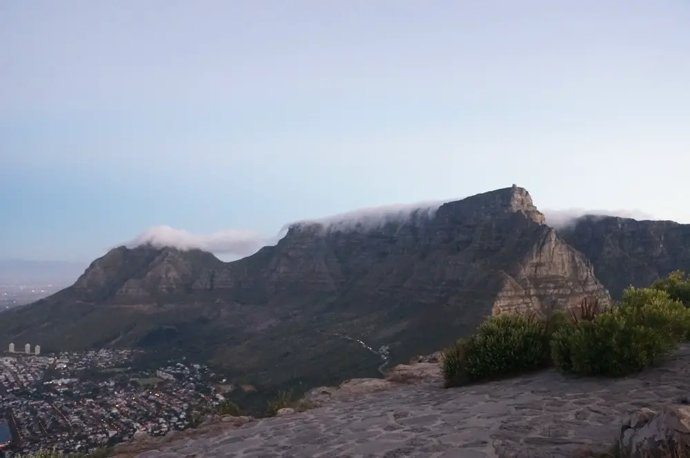
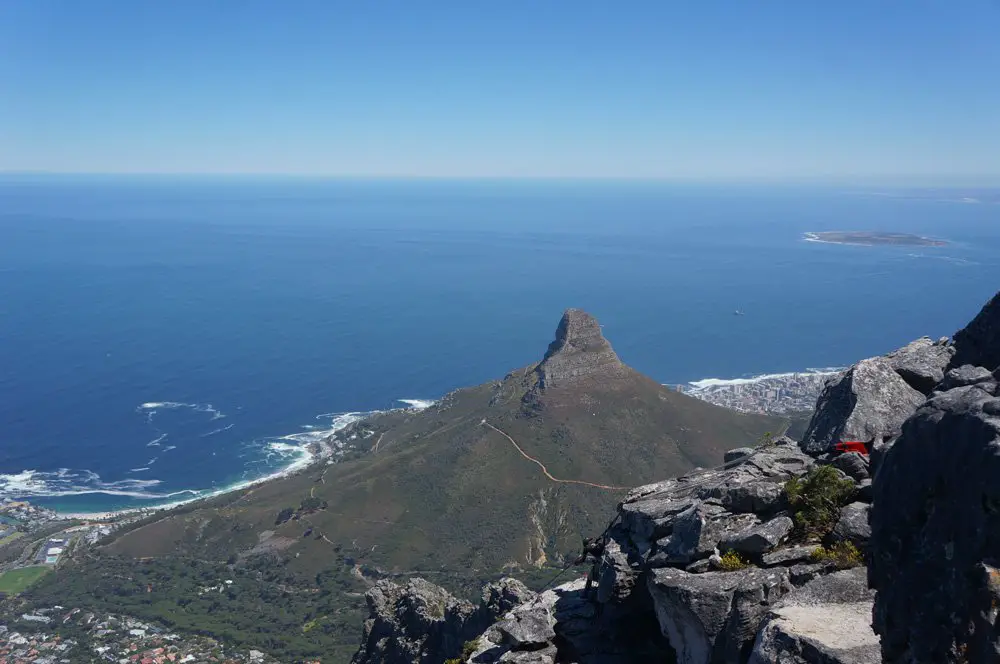

No trip to South Africa is complete without a visit to Cape Town and no trip to Cape Town is complete without a visit to the world famous Table Mountain.
One the absolute best things to do in Cape Town and undoubtedly one of its top attractions, Table Mountain was recently voted as one of the new wonders of the world. It’s not hard to see why. Its impossibly flat peak is visible from all of the surrounding area and is perhaps the most iconic landmark in Cape Town. Sandwiched between Devils Peak and Lions Head, Table Mountain stands 1km above sea level. It is also one of one of the oldest mountains in the world being hundreds of millions of years older than even the Himalayas.
Then there are the views. Panoramic views of Cape Town, all the way down to Cape Point can be seen from its peak allowing for breathtaking photos.
Unlike Lion’s Head, which can only be hiked, there is the incredibly popular table mountain cable cars that will take people straight to the top. Two cars, holding 60 people a piece go up and down this thing and it’s only a short 7 minute ride. However, during high season on ANY nice day, the line for this place is ridiculous. I came once before, with the intention of using the cable car but the line was 3 hours so we gave up and went to Lion’s Head instead.
The second time, I was determined to use this damn thing to get to the top. We came here at 8am, thinking we’d be early enough to avoid the lines but not a chance. Even at 8am, the line was 2 hours.
We had some friends wanting to hike up the mountain which I wasn’t against, and after discovering the long line, I was all for hiking. Also, the hike takes the same amount of time so screw it, hiking up we go. The cost for the cable car if you’re willing to wait is 210R round trip. Tickets can also be purchased ahead of time online, but you still need to wait in line.
Note that the second time I visited was during New Years so naturally you’ll see a spike in tourism. It’s not always so packed, but you should always plan for a crowd in the summer months.
The hike up iconic Table Mountain is no joke. It’s physically more demanding than the Lion’s Head hike and far less fun. It is, to sum it up, just non-stop stair-master. The hiking trail is very structured, and consists of thousands of rocky steps. The hike starts from the Plattekip entrance, about 1km down from the cable car.
The signs here say it’ll take 2.5 hours to hike to the top, but if you’re in decent shape, which I’d consider myself to be in, it should take no more than 2 hours.
With a few breaks in between, we completed the hike in 1.5 hours. They also recommend 2 liters of water for the hike, I think that’s a little ridiculous. 0.5-1 liter should be plenty because you don’t want to weigh yourself down
The hike was taxing, but we took about 5 short breaks (1-2 min), and we were up before we knew it. There were some crazy people that more or less ran up the mountain and did it in an hour. I’d also recommend doing this hike in the morning or before sunset so to avoid the heat.
A Table Mountain hike is definitely something every serious hiker should do but if you are limited on time, go to Lion’s Head instead.
After 1.5 hours, we’re finally at the top, and what a gratifying feeling it is. The top of the mountain is huge and you have to walk to the edges in order to have a view. There are many viewing points and I’ve yet to find the ultimate picture spot but I’m sure I will be back. There is a restaurant/cafe up here that serves food, and beverages, including alcoholic ones to celebrate the climb! We stayed up here for about 1 hour to have some drinks and take our pictures. We took the cable car down as we had enough to hike for the day. The line was much shorter to get down.